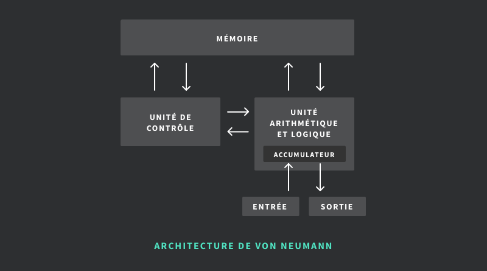
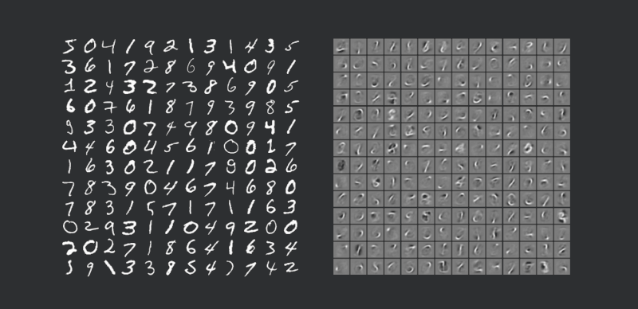
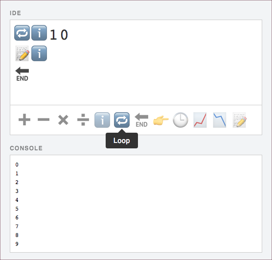
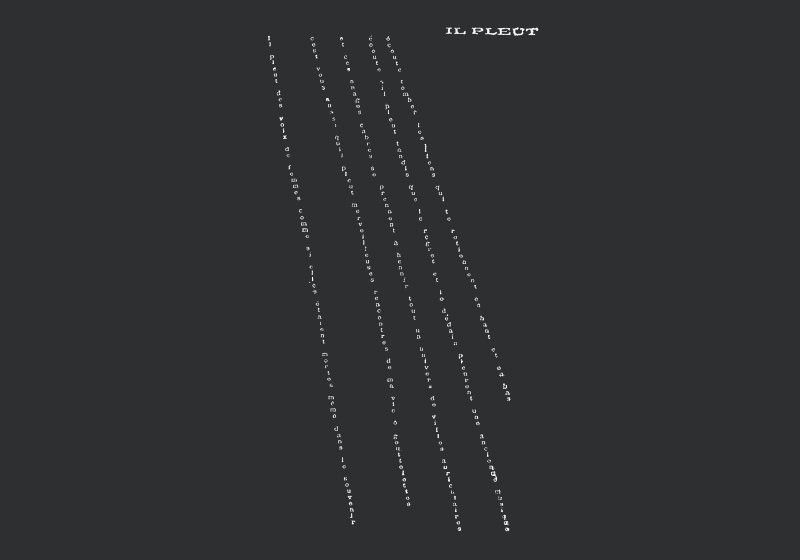
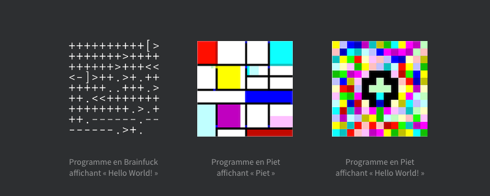

IDEs
AS
IDEAS
Les outils de programmation algorithmique au service du designer
Introduction
Qu’est-ce qu’un algorithme ?
Un algorithme est une séquence d’instructions qui vise à être exécutée afin de produire un résultat. Pour comprendre ou enseigner la notion d’algorithme, on fait bien souvent appel à des cas concrets que l’on rencontre dans la vie quotidienne. Une recette de cuisine, par exemple, constitue un algorithme : on y trouve des paramètres variables (les ingrédients, quantités, ustensiles utilisés) ainsi que des instructions (casser en morceaux, cuire au bain-marie, couper en dés). Enfin, le résultat obtenu lorsqu’on suit minutieusement cette recette de cuisine est, assurément, le plat qu’on a alors préparé. Cette vision nous fournit une première définition du concept d’algorithme, donnée par Serge Abiteboul et Gilles Dowek1 dans leur ouvrage “Le temps des algorithmes”.
Un algorithme est un procédé qui permet de résoudre un problème, sans avoir besoin d’inventer une solution à chaque fois. Avec cette définition, il est clair que, depuis l’aube de l’humanité, nous inventons, utilisons et transmettons des algorithmes : cuisine, taille du silex, pêche à la ligne, culture des lentilles et du blé, etc.2
La place des algorithmes
Nous entretenons donc une intime relation avec les algorithmes, et ce depuis l’aube de l’humanité. Toutefois, avec l’apparition de l’informatique au siècle dernier, les algorithmes se sont ancrés encore plus profondément dans nos vies. Au fil des années, ils se sont répandus de telle sorte qu’on les rencontre aujourd’hui partout, sans même nous en apercevoir. Abiteboul et Dowek établissent une liste d’usages variés d’algorithmes, qui existent aujourd’hui sous forme de programmes embarqués dans nos équipements numériques :
- le calcul : transformer des données – généralement des nombres –, résoudre des équations algébriques, encoder ou décoder un message ;
- la gestion de l’information : stocker, archiver et indexer des données ;
- la communication : faire circuler l’information via des protocoles de communication ;
- l’exploration : parcourir un grand nombre de possibilités afin de définir celle qui correspond le mieux à un problème donné – plus court chemin, meilleure répartition, etc. – on appelle aussi cette méthode la recherche exhaustive ou “recherche par force brute”3 ;
- l’analyse des données : agréger des statistiques et les classifier, afin par exemple de prédire des comportements – suggestions, recommandations ou encore publicité ciblée grâce au big data4 ;
- mais aussi : le traitement du signal (transformer, amplifier ou compresser une image ou un son), la commande d’un objet (établir la conduite d’une voiture autonome à partir des données captées), la fabrication de biens (automatiser la production industrielle), la modélisation et la simulation (dans la recherche scientifique, en établissant des théories) ;
- et enfin, dans le champ du design, comme dans le cas d’intelligences artificielles mises au profit de la création – dont divers exemples sont énumérés sur le site algorithms.design.
La présence croissante des algorithmes dans nos vies peut soulever des craintes – pour certaines justifiées – et en font aujourd’hui un objet de débat politique. Dans ce contexte, on tend toutefois à oublier une caractéristique fondamentale des algorithmes : ils sont écrits par des êtres humains. Les programmes que nous utilisons au quotidien sont – ou ont été – conçus par des développeurs, qui emploient des outils spécifiques à leur tâche et mobilisent des savoirs associés à ces outils : mathématiques, connaissance des langages, gestion de projet, etc. Ce sont ces outils qui forment le domaine d’étude précis de ce mémoire, que je mène avec une approche dite “de design”, c’est-à-dire centrée sur les utilisateurs et les usages.
Bricodage
Les contextes d’application et problématiques envisageables liés à la programmation algorithmique – ou code – sont infiniment variés : conception de systèmes, développement d’objets numériques, création artistique, visualisation de l’immatériel, etc. En tant que designer, je souhaite m’intéresser plus particulièrement aux diverses pratiques mobilisant l’écriture de programmes informatiques dans un but créatif, aujourd’hui regroupées sous le terme de creative coding5.
J’aborde ce sujet en assumant une démarche personnelle très empirique : comme beaucoup, je dois expérimenter pour comprendre. Compte tenu de la dimension relativement technique de l’écriture algorithmique, sa pratique constitue pour moi l’approche de recherche en design la plus adaptée à mon profil, et permet de concrétiser l’étude en proposant des solutions applicatives. Aussi, mon profil, avec son niveau de compétence propre, est celui que vise spécifiquement mon projet de recherche : mon étude concerne le codeur amateur, situé à mi-chemin entre le codeur néophyte et le développeur confirmé. En effet, je ne me concentre pas sur la question de l’apprentissage du code, qui concerne des novices – souvent des enfants. Ce contexte est au cœur de l’actualité, car l’enseignement du code se fait – à juste titre – de plus en plus entendre comme un besoin essentiel de nos jours. De nombreux projets et programmes existent ou se développent, avec le souci commun de proposer une découverte pédagogique et accessible des nombreuses possibilités qu’offre la pratique du code. Je ne traite pas non plus des méthodes de travail de développeurs confirmés, notamment car les domaines dans lesquels ils exercent, très pointus techniquement, ne relèvent que rarement d’une forme de créativité artistique – mais plutôt d’une créativité technique caractérisée par la recherche d’une méthode logicielle optimale. Le champ d’étude de ce mémoire se concentre donc sur le niveau moyen situé entre ces deux extrêmes : celui des développeurs créatifs hybrides, des designers-codeurs amateurs. J’appellerai cette catégorie de pratiquants les “bricodeurs”, pour reprendre le terme de “bricodage” proposé par David-Olivier Lartigaud dans son article du même nom, paru dans l’ouvrage Art++6.
Le jeu de mot “bricoder” […] pourrait décrire l’attitude “esthétique” qui consiste à bricoler/programmer “l’object informatique”. Le “bricodage” serait cette curiosité, ce désir d’ouvrir la “boîte noire” à des fins réflexives, artistiques ou esthétiques. Une approche de l’informatique “au-delà” du simple bidouillage qui offre “prise” sur la machine.
Lartigaud base sa définition du bricodage sur celle du bricolage, proposée par Claude Lévi-Strauss. Dans “La pensée sauvage”, celui-ci établit une distinction entre bricoleur et ingénieur.
On pourrait être tenté de dire que [l’ingénieur] interroge l’univers, tandis que le bricoleur s’adresse à une collection de résidus d’ouvrages humains, c’est-à-dire à un sous-ensemble de la culture. […] La différence n’est donc pas aussi absolue qu’on serait tenté de l’imaginer ; elle demeure réelle, cependant, dans la mesure où […] l’ingénieur cherche toujours à s’ouvrir un passage et à se situer au delà, tandis que le bricoleur, de gré ou de force, demeure en deçà, ce qui est une autre façon de dire que le premier opère au moyen de concepts, le second au moyen de signes. 7
Ainsi, l’ingénieur est, selon Lévi-Strauss, extérieur au monde dans lequel il développe son projet, tandis que le bricoleur, au contraire, fait partie du monde dans lequel il doit construire avec des “résidus d’ouvrages humains”, ou “moyens du bord”.
Le bricoleur est apte à exécuter un grand nombre de tâches diversifiées ; mais […] son univers instrumental est clos, et la règle de son jeu est de toujours s’arranger avec les “moyens du bord”, c’est-à-dire un ensemble à chaque instant fini d’outils et de matériaux […]. 8
Par ailleurs, Lévi-Strauss voit le bricoleur comme une sorte d’esthète, prenant plaisir dans la simple combinaison nouvelle qu’il réalise : le résultat obtenu demeure secondaire, et la satisfaction du succès éventuel n’est pas primordiale. Cette notion rejoint le domaine créatif dans lequel s’inscrit ce mémoire : ici, je parle également du designer en quête de forme, se laissant surprendre et inspirer par l’inconnu et l’inattendu.
Concevoir ses outils
Le bricodeur est donc un praticien pour qui le code est un matériau, au même titre que le bois ou le métal pour un bricoleur. En manipulant ce matériau, il exerce une prise de recul consciente sur ses outils et sa propre pratique : une qualité également très sollicité chez les designers en général. Cette démarche permet de questionner ces mêmes outils, de les détourner, voire, en supposant que la variété des outils existants est parfois insuffisante – lorsque ceux-ci s’avèrent inadaptés à un objectif donné –, de concevoir ses propres outils. Cette philosophie peut être illustrée par la démarche de John Maeda. À la fois artiste, graphiste, enseignant et chercheur au MIT9, Maeda a acquis une renommée mondiale en tant que pionnier d’une discipline mêlant les arts plastiques, le design, la typographie et l’interactivité, avec pour moyens récurrents l’ordinateur et la programmation : il a particulièrement contribué au développement du creative coding avec la création de Design By Numbers10, qui donna naissance à Processing11. Ainsi, le cœur de la démarche de Maeda est de créer les dispositifs avec lesquels il produit ensuite des œuvres, notamment graphiques. Comme l’écrit Paola Antonelli dans la préface de l’ouvrage de Maeda “Design By Numbers”, “la partie la plus importante de sa production, et celle dont il est le plus fier, n’est pas l’objet final, mais plutôt le processus.” L’auteure italienne précise l’idée fondamentale de Maeda : "pour bien designer avec un ordinateur, il faut créer soi-même le programme que l’on utilise – ou à défaut, le comprendre."12
Parue en 2012, la dix-huitième édition de la publication “Graphisme en France”, intitulée “code <> outils <> design”, traite dans une série d’interviews de cette question spécifique de la création d’outils individuels.
Nous avons posé deux questions […] :
- Pourquoi écrivez-vous vos logiciels plutôt que d’utiliser des outils existants ?
- En quoi le fait d’écrire vos propres logiciels affecte-t-il votre processus de création et les qualités visuelles de l’œuvre finale ?
[…] Réponse la plus courante : le fait d’écrire soi-même ses programmes permet un meilleur contrôle, lequel est souvent présenté comme une liberté individuelle. Autre thème récurrent : écrire ses logiciels est un moyen de s’éloigner des solutions génériques. Les nouveaux outils sont synonymes de nouvelles opportunités. […] En créant de tels outils, uniques, les créateurs s’ouvrent de nouveaux horizons.13
Quels sont donc les outils génériques qui constituent l’environnement technique du designer-codeur amateur, ou bricodeur, et quels sont les outils innovants ? Comment le créatif interagit-il avec ces interfaces numériques ? Quels sont les cadres conventionnels de l’écriture du code, et quels autres cadres alternatifs, peuvent exister ? Et pour quels bénéfices ? Telles sont les questions qui animent ce mémoire, qui s’inscrit dans la continuité des initiatives de Maeda et s’articule autour d’une question similaire : comment faciliter et encourager l’intégration de processus algorithmiques dans une pratique créative ?
Par ailleurs, la définition du terme “algorithme” donnée plus haut implique la notion d’instruction, dont la définition est double : il s’agit à la fois de l’action de disposer – mettre quelque chose dans une disposition en vue d’un résultat –, et, dans un sens métonymique, d’un discours indiquant ce qui doit être fait. Cette seconde vision, qui fait état de la transmission d’une information, implique une forme de langage : celui-ci peut prendre plusieurs formes, notamment l’écriture. J’étudierai donc les différentes formes que peut prendre l’écriture algorithmique.
Après avoir défini et illustré l’ensemble des notions mises en jeu par le sujet – algorithme et écriture algorithmique –, j’essaierai de déterminer quelle sont les différentes catégories d’interfaces d’écriture algorithmique et ce qu’elles permettent. Enfin, je m’appliquerai à questionner l’interface en soi, à travailler ce matériau que devient, dans cette conception, l’écriture algorithmique.
Le matériau algorithme
Je reviens à la première phrase de ce mémoire : “un algorithme est une séquence d’instructions qui vise à être exécutée afin de produire un résultat”. Dans cette définition générique s’inscrit une catégorie plus réduite d’algorithmes spécifiques, un ensemble que l’on nomme algorithmes symboliques. Par abus de langage, et en raison de notre contexte technologique contemporain, la notion d’algorithmes symboliques a presque remplacé celle, plus générique, d’algorithmes : l’informatique a orienté l’emploi même du mot. La spécificité des algorithmes symboliques est qu’ils manipulent des symboles écrits : chiffres, lettres, assemblés en nombres, en mots et en phrases, et vecteurs de sens.14
Cette proximité entre les notions d’algorithmique et de mathématiques s’est confirmé grâce aux progrès techniques des deux siècles passés. Pour définir plus en détail la notion d’algorithme, j’ai donc choisi une approche chronologique : comment, et via quels progrès techniques, les algorithmes – symboliques – ont-ils évolué dans l’Histoire ? Cette question sera particulièrement traitée en focalisant sur les outils mis en œuvre au fil des époques.
Approche technico-historique
De la main à la machine
Remontons aux origines des algorithmes symboliques, il y a 5 000 ans. À cette époque, les mathématiciens ont déjà mis au point des algorithmes servant à résoudre des calculs algébriques simples tels que des additions et des multiplications, mais ceux-ci sont exécutés à la main par les scribes. Des tâches répétitives qu’on aurait tout intérêt à déléguer aux machines, afin que celles-ci s’effectuent mécaniquement.
S’ensuivent cinq millénaires d’innovations techniques. Les premiers abaques15, suivis quelques siècles plus tard de leurs proches dérivés, les bouliers, assistent les hommes dans ces calculs mais ne sont pas encore autonomes. Au Moyen Âge, les cloches au sommet des cathédrales sonnent chaque heure sans intervention humaine : ce sont les premières machines capables d’exécuter des algorithmes symboliques. En 1642, l’inventeur français Blaise Pascal16 met au point la première machine à calculer, qu’il nomme “machine arithmétique” ; elle est retravaillée quelques 30 ans plus tard par Gottfried Leibniz17 qui y ajoute une interface permettant de réaliser de façon automatique des multiplications et des divisions.
Jacquard, ou le tissage programmé
En 1801, l’inventeur lyonnais Joseph Jacquard met au point un système de métier à tisser qui portera son nom : le fameux “métier Jacquard”. Celui-ci combine les métiers à tisser classiques avec le principe de cartes perforées inventé en 1728 par Jean-Baptiste Falcon – qui lui-même reprenait l’idée des rubans perforés que Basile Bouchon, son maître, proposait trois ans plus tôt. En perçant ou non un trou à un emplacement spécifique d’une carte, on peut programmer la machine : une fois insérée en entrée de la machine, les cartes guident les crochets qui soulèvent les “fils de chaînes” – dont l’agencement produit le motif sur le textile tissé. Ce dispositif est souvent considéré comme la première forme de stockage d’informations binaires (tout ou rien, vrai ou faux), et le métier Jacquard comme l’ancêtre de l’ordinateur.
Ce procédé laborieux de perforation est peut-être une des raisons pour lesquelles certaines personnes non initiées s’imaginent qu’un “informaticien” code en tapant des séries de 0 et de 1. Il semble toutefois important de distinguer l’unité d’information binaire “un trou ou un plein” de celle qui constitue la base de l’informatique moderne : le bit18. En effet, une nuance importante s’observe sur la dimension physique de ces deux types d’unités : le trou et le plein peuvent être vus, touchés, respectivement rebouché ou perforé : en bref, ils sont tangibles. Le bit informatique, lui, nous est invisible et impalpable – à notre échelle, “à l’œil”. Par ailleurs, un trou ou un plein, dans la conscience du tisserand, est interprété comme un résultat : il peut être visualisé comme la présence ou l’absence d’une maille à un endroit précis du motif. Dans le cas des cartes perforées, une parfaite connaissance et maîtrise du matériel est donc essentielle à la programmation. À l’inverse en informatique, le programmeur ne se soucie – généralement – pas du stockage et de la transmission de l’information binaire.
La machine analytique de Babbage
Si le métier Jacquard est parfois considéré comme l’ancêtre de l’ordinateur, ces machines ne sont pas encore des ordinateurs à proprement parler. Il leur manque pour atteindre ce statut une caractéristique majeure : l’universalité. En effet, les machines cités plus haut en exemples sont chacune destinée à une unique fonction ; là où un ordinateur est polyvalent, universel, capable d’exécuter n’importe quel algorithme symbolique imaginable : en résumé, une “machine à tout faire”.
Au cours du XXème siècle, l’apparition des premières machines analytiques va transformer les usages des algorithmes. En 1834, le visionnaire britannique Charles Babbage19 débute le développement d’une machine d’un concept alors nouveau, qu’il qualifie de “machine analytique”. Celle-ci reprend le principe des machines à calculer mécaniques qui existent alors depuis plusieurs siècles déjà. Mais l’inventeur a l’idée d’ajouter à ces systèmes le principe des cartes perforées apparues avec les métiers Jacquard. Les composants de cette machine sont similaires à ceux qui équipent un ordinateur moderne.20
Pendant qu’il travaille sur ce projet, Babbage entre en correspondance avec Ada Lovelace. Pionnière de la science informatique, c’est elle qui, en 1843, sera à l’origine du premier algorithme destiné à être exécuté sur une machine : la machine à différences de Charles Babbage. Cet algorithme, considéré comme le premier programme informatique à proprement parler, sert alors à calculer la suite des nombres de Bernouilli21. Ada Lovelace est ainsi connue comme la première programmeuse de l’histoire.
La révolution Turing
Les travaux de Lovelace et Babbage trouvent écho un siècle plus tard, dans les années 1930, grâce notamment aux recherches d’Alan Turing22. Cet inventeur, figure emblématique de la recherche mathématico-scientifique du XXème siècle, conçoit en 1936 la “machine de Turing”, en vue de donner une définition précise au concept d’algorithme et à sa représentation formelle et technique de “procédure mécanique”.
[La machine de Turing] consiste en deux éléments principaux :
- une machine représentée par une tête de lecture/écriture susceptible de se trouver dans un nombre fini d’états,
- une bande (magnétique par exemple) de longueur infinie […] devant laquelle se meut la tête de lecture et qui alimente en données cette machine. […]
Turing montre qu’une partie de la bande peut contenir la description de la table d’actions élémentaires d’une autre machine de Turing : une machine peut en simuler une autre. C’est grâce à cette construction schématique […] que Turing peut démontrer qu’il existe des machines de Turing dites universelles capables d’imiter toute autre machine de Turing. 23
Turing illustre ainsi la notion d’universalité telle qu’elle avait été formulée par Lovelace et Babbage. La machine de Turing universelle est considérée comme la genèse des travaux de John von Neumann, qui en 1945 propose un modèle utilisé encore aujourd’hui dans nos ordinateurs modernes : l’architecture de von Neumann24.

En transposant ces composantes dans notre vocabulaire matériel contemporain, on confirme la proximité entre ce modèle, vieux de plus de 70 ans, et les ordinateurs que nous utilisons au quotidien :
- le processeur effectue les opérations ;
- la mémoire vive (RAM) stocke les données en cours d’utilisation ; et les disques durs – ou autres supports de stockage – contiennent des données pérennes ;
- les périphériques en tout genre permettent l’interaction en entrée (clavier, souris, écran tactile, microphone, caméra, port USB, lecteur de disque, etc.) et en sortie (écran, haut-parleurs, etc.)
Nous arrivons à ce stade à l’ordinateur tel que nous le connaissons, appareil nécessaire à la programmation algorithmique, capable d’exécuter des logiciels. On pourra donc considérer que l’ordinateur est la machine du programmeur, mais une machine universelle, capable de simuler elle-même un environnement d’outils – les logiciels de programmation. Ici, le programmeur maîtrise l’intégralité de le production d’un algorithme, indépendamment d’une connaissance plus ou moins parfait de ces outils. Toutefois, les progrès techniques les plus récents dérogent à cette règle : il s’agit des algorithmes relevant de l’intelligence artificielle.
Les intelligences artificielles
Phénomène au cœur de l’actualité scientifique et sociale25, les “intelligences artificielles” sont constituées d’algorithmes dont la conception relève d’une divergence notable dans la façon de programmer. Le domaine de l’intelligence artificielle est extrêmement vaste et met en relation de nombreuses disciplines : informatique, mathématiques, psychologie, linguistique, philosophie, neurosciences, psychologie et bien d’autres encore. Pour cette raison, la question de l’intelligence artificielle ne sera pas traitée en détail ici. Toutefois, pour comprendre l’accroissement inédit de ce domaine au cours de la dernière décennie – et l’explosion médiatique qui en a suivi –, il est important de noter le décalage de notre contexte culturel et technique actuel, par rapport à celui en place aux débuts de la recherche en intelligence artificielle26. Celui-ci est notamment lié au phénomène des big data : nous sommes de plus en plus équipés de dispositifs connectés, et les plateformes numériques collectent ainsi de plus en plus de données sur nos comportements. C’est cette immense masse de données qui permet l’accomplissement de ces algorithmes nouveaux qui composent les intelligences artificielles.27
On trouve dans le champ de l’intelligence artificielle la notion “d’apprentissage machine” (machine learning en anglais). Qu’il soit supervisé – assisté par un être humain qui valide ou non les propositions de la machine – ou non, ce principe permet à des algorithmes d’extraire et analyser des données afin d’y discerner des schémas, structures, ou tout autres éléments constitutifs de catégories. La notion d’apprentissage réside dans le fonctionnement en deux temps de ces programmes : ils doivent d’abord être entraînés avec des échantillons de données “labellisées”, c’est-à-dire accompagnées de l’information que le programme devra ensuite chercher à trouver dans d’autres données. Par exemple en proposant quelques dizaines de chiffres calligraphiés – chacun labellisé de 0 à 9 – à un algorithme de reconnaissance d’image, celui-ci “apprend” à quoi ressemble chaque chiffre – en distinguant des patterns dans leurs tracés – et sera capable d’en trouver avec une certitude plus ou moins grande dans d’autres images non labellisées à l’avenir.

Parmi les systèmes et modèles propres à l’apprentissage machine, on trouve notamment les réseaux neuronaux28. Ceux-ci sont librement inspirés du fonctionnement des neurones biologiques, ceux qui composent le cerveau d’un être vivant – typiquement, des êtres humains.29 Ce nouveau paradigme s’affranchit de la conception classique d’un algorithme, qui jusqu’alors était entièrement conçu par un programmeur : ici, la machine détermine elle-même les moyens et méthodes qu’elle met en jeu afin d’atteindre les objectifs spécifiés. Malgré leur incompréhension des symboles mêmes qu’ils manipulent, ces algorithmes conçoivent, modélisent, simulent et classifient ainsi les données d’une manière obscure pour l’auteur même du programme.
Approche fondamentale
Les algorithmes se ressemblent : ils sont constitués d’un nombre restreint d’expressions structurantes similaires, que l’on retrouve fréquemment, agencées différemment selon la finalité recherchée. Selon Abiteboul et Dowek, n’importe quel algorithme symbolique peut être exprimé à partir de quatre instructions élémentaires : la séquence, l’affectation, l’itération et la condition.30
Séquence

La séquence est l’ordre même dans lequel les instructions sont agencées, c’est-à-dire la structure de l’algorithme elle-même : “fait ceci, puis cela”. Lorsqu’il est représenté – c’est-à-dire écrit ou dessiné –, on lit classiquement un algorithme de haut en bas, conformément au sens de lecture de nombreux langages. On peut parfois s’émanciper, d’une certaine manière, de cette séquence, notamment en spécifiant expressément à l’algorithme d’éluder une partie des instructions dans certains cas précis. On groupe alors les instructions en ensembles – que l’on peut appeler des fonctions –, auxquels on peut ensuite faire référence. La “tête de lecture”, ou positionnement de l’algorithme à un moment donné de son exécution, ne déroule donc pas nécessairement la structure même cet algorithme de manière linéaire : elle peut effectuer des allers-retours, sauter des parties, y revenir, etc.
Affectation

L’affectation est le fait d’attribuer une valeur à une variable – par exemple, “a prend la valeur de b”. Une variable est constituée d’un nom (son identifiant) et d’une valeur unique à chaque instant. Cette valeur peut être numérique (un nombre entier ou décimal, naturel ou relatif), textuelle (un caractère ou une chaîne de caractères) ou encore un booléen : vrai (true) ou faux (false).31 Une variable peut également accueillir un ensemble de données comme un tableau (array en anglais) indexé et/ou associatif. Comme son nom l’indique, une variable peut prendre plusieurs valeurs au cours du temps, à l’exception des constantes – dont la valeur est figée.
Itération

L’itération, communément appelé boucle, est le fait de répéter une série d’instructions. Ce concept est fondamental, puisque les algorithmes ont généralement pour but d’automatiser des tâches répétitives. On trouve plusieurs types de boucles, en voici une liste non exhaustive :
- la boucle “pour” (for loop en anglais), qui exécute les instructions pour un nombre donné d’itérations : “répète 10 fois ceci” ;
- la boucle “tant que” (while en anglais), qui exécute les instructions tant qu’un énoncé est valide : “tant que ceci est vrai, fait cela” ;
- la boucle “pour chaque” (for each en anglais), qui exécute les instructions pour chaque entité d’une liste (des contacts dans un annuaire par exemple) : “pour chaque ceci, fait cela”.
Condition

Enfin, la condition, ou test conditionnel, permet d’effectuer ou non une instruction – ou série d’instructions – selon la valeur d’une variable donnée : par exemple, “si ceci est vrai, faire cela”. On appelle généralement expression conditionnelle le schéma “si, alors, sinon” (if, then, else). De plus, on trouve parfois dans ces structures un nombre plus ou moins important d’expressions du type sinon si (else if), qui permettent des conditions imbriquées. Ici encore, cette notion est extrêmement importante, en cela qu’elle permet à un algorithme de prendre des chemins différents, de s’adapter à la complexité éclectique des données réelles qui lui sont fournies, et ainsi d’être plus polyvalent. À noter qu’on peut faire prendre des chemins différents à un algorithme en prenant comme conditions des valeurs générées aléatoirement : “choisis un nombre entre 1 et 10, s’il est supérieur à 5, fais ceci, sinon, fais cela”.
Manipuler le matériau : l’écriture algorithmique
Afin d’être exécutés par une machine, les algorithmes doivent être transposés de l’intelligence du programmeur vers un support pérenne et interprétable par cette machine. Parce que les ordinateurs ont été conçus pour manipuler des symboles, la méthode de communication qui s’est naturellement imposée est l’écriture. Programmer, vu de l’extérieur, c’est avant tout taper une succession de lettres et de chiffres sur un clavier. Dans cette partie, je m’intéresse donc à cette action d’écriture, mais également aux notions qu’elle implique, notamment l’emploi d’un langage.
Qu’est-ce qu’écrire ?
Écriture : le langage imagé
L’écriture est une méthode de communication qui consiste à représenter un langage via l’inscription de signes graphiques sur des supports variés. En cela, elle est une forme d’inscription, tel que le terme est défini par Bruno Bachimont : “l’association d’un substrat matériel à une forme d’expression”. L’écriture est née quatre millénaires avant notre ère, en Mésopotamie, afin de conserver des traces d’échanges – notamment commerciaux –, la mémoire humaine n’étant pas infaillible et encore moins illimitée. Le philosophe François Dagognet nous rappelle l’adage latin : “Verba volant, scripta manent” – les paroles s’envolent, les écrits restent.32 Mais Dagognet souligne aussi que dans ce transfert de la parole à l’écrit, le discours n’est pas forcément transcrit scrupuleusement, mais peut au contraire subir des modifications.
De ce que le vocalisé s’insinue dans le texte et aide à le comprendre, il ne s’ensuit pas que l’imprimé ne le dépasse pas. Si le graphisme ne supprime pas entièrement le gestuel, il l’amoindrit, tend à l’éloigner, voire à l’enjamber. 33
En résumant sa pensée, je retiendrai ceci : si l’écriture découle de la parole comme une nouvelle forme d’échange communicationnel, elle n’en est pas une forme strictement identique. Un énoncé vocal ne transmet pas seulement la nature de l’énoncé, mais également sa forme – la tonalité, la prononciation, l’attitude –, au même titre que la représentation graphique joue sur des variations de représentation – graphie, tracé, composition, contraste – pour véhiculer une information qui enrichit le contenu même de l’écrit.
Ce propos rejoint la thèse d’Anne-Marie Christin, professeure spécialiste de l’écriture et des relations entre texte et image. Selon elle, l’écriture ne reproduit pas la parole, mais la rend visible : elle est le résultat de la fusion entre le langage, qui régit les échanges à l’intérieur d’un groupe, et l’image, composée de figures et de supports.34
L’écriture présuppose donc un emploi du langage. Selon le TLFi, le terme langage implique une définition multiple, selon que l’on parle du langage comme faculté et comme système, ou bien comme moyen d’expression, comme usage. Un langage est généralement doté d’une sémantique, et fréquemment d’une syntaxe – deux branches de la linguistique symétriquement opposées. La sémantique étudie les signifiés : ce dont on parle, ce que l’on cherche à transmettre – en résumé, le fond de l’énoncé. La syntaxe, pour sa part, se concentre sur le signifiant : la langue, la représentation graphique, la grammaire employée, etc. – en résumé, la forme de l’énoncé. 35
Écritures : 3 typologies
La notion d’écrit, au sens large, désigne donc les diverses formes que peuvent prendre la traduction graphique de l’information communiquée : dessins, symboles, chiffres, lettres, etc. Toutefois, le sens généralement admis du terme écrit désigne trois grandes catégories de systèmes : logographique, syllabique et alphabétique.
- l’écriture logographique emploie des logogrammes, caractères – ou glyphes – représentant un mot ou un morphème – une fraction de mot. Plus précisément, on parle d’un pictogramme lorsqu’on représente directement un objet (par exemple, le blé), et d’un idéogramme lorsqu’on cherche à symboliser une idée (par exemple, la vitalité).
- l’écriture syllabique emploie un syllabaire, composés de symboles exprimant chacun une syllabe. Les différentes formes d’écritures chinoises et japonaises en sont les exemples les plus courants.
- enfin, l’écriture alphabétique est celle que nous connaissons le mieux, pour l’utiliser quotidiennement. Elle utilise un ensemble de symboles, dont chacun représente un phonème – plus petite entité linguistique –, composés de manière à former des mots. Une trentaine de signes alphabétiques suffisent généralement à écrire une langue. 36
L’écriture algorithmique appartient classiquement à cette troisième catégorie : quelle forme prendrait la programmation si l’on changeait de catégorie, en préférant par exemple une écriture logographique ? Je propose une première réponse à cette question avec une expérimentation intitulée “emoji2code”, permettant de coder à partir d’un enchaînement d’emoji. Ici, l’écriture n’est pas classique – on ne tape pas sur les touches du clavier pour former des mots et des phrases –, il est d’avantage question de composition : il suffit de cliquer sur un emoji pour le voir apparaître dans la zone de saisie. Chaque emoji correspond à une instruction (par exemple “boucler”, “écrire dans la console”) ou un élément (une variable, une opération mathématique). Dans l’exemple ci-dessous, je réalise simplement une boucle permettant de compter de 0 à 9.
L’écriture émancipée
La pratique de l’écriture se place comme acte fondateur de la littérature. Par “littérature”, j’entends la conception de l’écriture comme une forme d’art. Cet art recouvre de nombreux genres et styles : genre pictural, genre narratif, genre dramatique, contenu, ou encore registre. 37
Nul besoin de traiter en détail les formes d’écritures que nous connaissons le mieux : page par page, alignant des mots dans un alphabet latin, de la gauche vers la droite et du haut vers le bas. Pour questionner le potentiel créatif de la pratique de l’écriture, je m’intéresse plus particulièrement à ses représentations moins classiques. Pour Anne-Marie Christin, l’exemple le plus pertinent qui a libéré l’écriture occidentale est une œuvre de Stéphane Mallarmé, poète français du XIXèmesiècle. On le décrit aujourd’hui comme un des premiers “poèmes typographiques”.
Tout a changé dans la pensée occidentale de l’écrit avec le Coup de Dés de Mallarmé. Pour la première fois de leur histoire, les héritiers de l’alphabet que nous sommes ont pris conscience du fait qu’ils ne disposaient pas simplement, avec ces quelques signes, d’un moyen plus ou moins commode de transcrire graphiquement leur parole mais d’un instrument complexe, double, auquel il suffisait de réintégrer la part visuelle – spatiale – dont il avait été privé pour lui restituer sa plénitude active d’écriture.38

Dans la même idée de mise en espace des lettres, le poète français Guillaume Apollinaire publie en 1918 un ouvrage intitulé “Calligrammes”, terme qu’il invente à partir de la contraction de calligraphie – l’art graphique du dessin de caractères – et d’idéogramme. Cette forme particulière de poésie est parfois nommée “poésie graphique”.

On notera que François Dagognet classe le travail d’Apollinaire dans une catégorie qu’il intitule “iconographies ordinatrices et inventives”. Celle-ci est constitué de productions graphiques et littéraires qui font usage de métaboles, qu’il emprunte au groupe µ39 dans son ouvrage “Réthorique Générale” : un métabole désigne tout espèce de changement du langage.40 Comme dans beaucoup de pratiques créatives, la nouveauté passe donc par le changement, l’émancipation des artistes vis-à-vis des formes ordinaires, au profit de formes nouvelles, alternatives.
En reportant ces distinctions au champ des algorithmes, on pourrait facilement s’interroger sur la forme que pourrait prendre une “écriture alternative” d’un algorithme, comme par exemple une écriture poétique. Le livre “./code --poetry” de Daniel Holden et Chris Kerr, ainsi que le site web associé41, présentent des exemples de programmes s’affranchissant des conventions habituelles (voir la partie “Lignes de code, règles et conventions”) et dont le résultat est essentiellement esthétique : en résumé, du “code poétique” qui ouvre la voie à une littérature algorithmique. Le projet Code Peoms du designer Ishac Bertran regroupe par exemple une série de poèmes dont la syntaxe et le vocabulaire sont empruntés au langages de programmation. Les œuvres tirées du projet “./code --poetry” s’inscrivent pour leur part dans un registre plus graphique, et qui traite encore davantage le code comme matière : on peut notamment citer Flocking.go, un programme dans le langage Go, mêlant poésies classique et algorithmique, pour un résultat animé qui fait écho avec la sémantique du texte.

L’écriture algorithmique
Attardons-nous davantage sur la spécificité de l’écriture dans le cas d’un programme informatique : quelle différence y a-t-il entre l’action de coder et la rédaction d’une article ou d’un poème ? On notera tout d’abord que dans ce contexte informatique, les algorithmes prennent la forme de programmes, rédigés dans un langage de programmation spécifique, grâce à un ordinateur. Toutefois, algorithme et programme sont deux notions différentes bien qu’étroitement liées, tout comme informatique et ordinateur : il convient donc de les clarifier.
De l’algorithme au programme
Un programme informatique est une suite d’instructions qui effectue une ou plusieurs tâches spécifiques lorsqu’elle est exécutée par un ordinateur.42 L’universitaire français Franck Varenne attire notre attention sur une possible origine de la confusion entre algorithmes et programmes. Il cite Charles Hoare, professeur et informaticien britannique, également connu pour la conception de nombreux algorithmes encore utilisés aujourd’hui. Hoare déclare que “la programmation informatique est une science exacte en ce que toutes les propriétés d’un programme […] peuvent être découvertes à partir du texte du programme lui-même au moyen de raisonnement purement déductif.” Varenne y oppose l’argumentation de James Fetzer, philosophe américain spécialisé notamment en informatique : la vision de Hoare amène à confondre les algorithmes et les programmes. Selon Varenne, rien n’implique une exacte similitude entre le comportement supposé du programme – à la lecture donc – et les conséquences réelles de son exécution sur la machine.
Les algorithmes sont des solutions formelles (abstraites en ce sens) et effectives pour certains problèmes bien formulés. Les programmes chargés en mémoire (exécutables) sont en revanche des modèles causaux (car physiques) de ces algorithmes. Alors que les algorithmes sont des modèles abstraits des programmes exécutables, les programmes exécutables sont des modèles causaux des algorithmes.43
Varenne qualifie donc ces modèles d’imparfaits : le programme ne peut jamais être vérifié formellement, mais seulement de façon empirique. En effet, on peut établir la validité d’un programme, notamment en développant une sémantique qui régule le code écrit par le programmeur. On résout alors les erreurs de programmation : variables sans valeur définie, fautes de syntaxe, structure erronée ou illogique, etc. Toutefois, la machine peut elle-même faire preuve de dysfonctionnement du fait même de sa dimension physique : processeur défectueux, espace de stockage corrompu, mémoire vive saturée, etc.
Cette marge d’incertitude entre le programme que l’on voit et ce que l’on obtient lorsqu’il est exécuté a été baptisée WYSINWYX, pour What You See Is Not What You eXecute – littéralement “ce que vous voyez n’est pas ce que vous exécutez”.44 Cet acronyme est une référence au paronyme duquel il est inspiré : le terme WYSIWYG —What You See Is What You Get, soit “ce que vous voyez est ce que vous obtenez” – désigne, en informatique, les interfaces utilisateurs où l’on compose directement le résultat final souhaité.45
De l’ordinateur à l’informatique
La définition du terme “ordinateur”, dans son sens admis populairement, se base sur les travaux d’Alan Turing.
Un ordinateur est un système de traitement de l’information programmable tel que défini par Turing et qui fonctionne par la lecture séquentielle d’un ensemble d’instructions, organisées en programmes, qui lui font exécuter des opérations logiques et arithmétiques.
Les composants technologiques des ordinateurs modernes traitent des informations binaires. Là où les cartes perforées de Falcon utilisaient des trous ou des pleins pour signifier un des deux états uniques qui composent un bit, nos ordinateurs, dont le fonctionnement est basé sur l’électricité, utilisent pour signifier une valeur la présence ou l’absence de courant, de charge ou de tension électrique – suivant qu’il soit question de stocker ou de transmettre une donnée.
Les racines mathématiques de l’ordinateur se retrouvent dans l’étymologie même du terme. En 1955, Fançois Girard, responsable du service publicité d’IBM France, fait appel à son ancien professeur de lettres, Jacques Perret, afin de trouver ensemble une traduction au mot anglais “computer”. Perret propose alors l’appellation “ordinatrice électronique”, inspirée de l’ordonnateur, ce composant de la machine décrit par Babbage comme celui qui “prend et reporte les nombres, et les soumet à l’opération demandée”. L’intitulé est ensuite simplifié en ordinateur et entre rapidement dans le langage populaire.
La notion d’informatique est intimement liée à l’univers des ordinateurs. Si en anglais, ordinateur se dit “computer”, la notion d’informatique est tout simplement désignée par la formule “computer science”. Certains penseurs affirment toutefois que l’on ne peut pas définir l’informatique comme “la science des ordinateurs”. On attribue notamment à Edsger Dijkstra, informaticien néerlandais reconnu, l’aphorisme suivant : “L’informatique n’est pas plus la science des ordinateurs que l’astronomie n’est celle des télescopes.” Les auteurs de cette phrase sont en réalité Michael Fellows et Ian Perberry, et la citation complète – traduite – est la suivante :
L’informatique n’est pas plus la science des ordinateurs que l’astronomie n’est celle des télescopes, la biologie celle des microscopes, ou la chimie celle des béchers et des tubes à essais. La science ne traite pas des outils. Elle traite de notre manière de les utiliser, et de ce que l’on découvre en les utilisant. 46
Dans “Qu’est-ce que l’informatique ?”, Franck Varenne propose et critique de nombreuses ébauches définitionnelles – c’est là le cœur de l’ouvrage – avant de conclure par la description suivante :
[L’informatique est] une technologie (dans son caractère instumental et de délégation opératoire) et une discipline (dans ses versants cognitifs et réthoriques) de démultiplication, d’entrelacement, d’application […] et/ou de confrontation des voies de la référence. Plus brièvement : elle est une technologie d’entrecroisement automatique et programmable des voies de la référence. 47
Varenne nomme “voies de la référence” la faculté des symboles utilisés en informatique (nombres, lettres, signes, etc.) à faire référence à un ou plusieurs autres symboles. En ce qui concerne le calcul numérique, les voies sont au nombre de deux : la concrétisation ou l’abstraction. Si elle en est fondamentalement inspirée, l’informatique va au-delà du calcul et joue sur les niveaux de symboles mis en œuvre : les symboles sont hybridés via des procédés de sous-symbolisation et de simulation. On pourrait illustrer cette distinction par un phénomène de “couches” superposées, où chacune est une symbolisation de celle sur laquelle elle s’appuie : cette superposition constitue ainsi une forme de simulation récursive, chaque strate jouant le rôle de la précédente sous une autre forme.

Langages naturels et langages formels
En linguistique, on appelle “langage naturel” un langage qui a évolué naturellement au travers de l’utilisation humaine et de sa répétition, sans planification particulière ou préméditation consciente de la part du peuple qui l’utilise – comme le français ou l’anglais par exemple. On y oppose la notion de “langage formel”, parfois également appelé “langage construit” ou encore “langage artificiel”. À l’inverse, il s’agit ici d’un langage créé de toutes pièces dans un temps relativement court, par une population bien plus restreinte – éventuellement l’œuvre d’un seul auteur. On peut distinguer trois catégories parmi ces langages construits :
- les langages conçus ou engelangs (de l’anglais engineered), à nouveau divisés en langages logiques (par exemple les langages de programmation informatique), philosophiques ou expérimentaux ;
- les langages auxiliaires ou auxlangs, créés pour la communication internationale – un des plus célèbres étant l’Esperanto ;
- les langages artistiques ou artlangs, comme ceux inhérents à une œuvre de science-fiction ou de fantaisie – par exemple les langues créées par l’auteur J.R.R. Tolkien.
Le terme de langage formel fait davantage référence au champ des mathématiques et de l’informatique : cette notion intègre à la fois l’ensemble des séquences de caractères et des symboles qui sont employés et les différentes règles qui déterminent leurs usages. C’est donc celle à laquelle je m’intéresse en particulier dans la suite de cet exposé, centrée sur les langages informatiques.
En m’interrogeant sur la dualité entre langage naturel et langage formel dans notre manière de communiquer à la machine – notamment des instructions –, je propose la question suivante : ne peut-on pas utiliser d’autres formes de langages qu’un langage de programmation ? J’ai entamé une proposition de réponse grâce à une interface intitulée text2code48, qui permet de “coder” en langage naturel, c’est-à-dire en écrivant de l’anglais intelligible par tous – ce qui implique une traduction “cachée” en langage JavaScript, exécutable par un navigateur.

Langages informatiques
Il existe une grande variété de langages de programmation, comme en témoigne la liste établie sur Wikipédia49. Tous possèdent des règles de syntaxe, un vocabulaire, une sémantique, un vocabulaire et des identifiants qui leurs sont propres – mais ils partagent également de nombreux poins communs. À la vue de cette liste de plus de 600 langages référencés, on peut se poser la question suivante : pourquoi y a-t-il autant de langages de programmation ? Sur le site communautaire de programmation StackOverflow50, l’ingénieur Matt Sherman propose dans un article51 plusieurs éléments de réponse :
- les différents langages sont autant d’outils, chacun plus ou moins adapté à des usages précis – il s’agit de choisir pour chaque finalité le langage qui sera le plus efficace, sûr et rapide à manier.
- les programmeurs ont des goûts personnels – et des compétences qui leurs sont propres. Tel ou tel langage est souvent choisi en fonction des connaissances de l’équipe de programmation sur celui-ci.
- la variété des langages de programmation est ainsi riche, en ce qu’elle permet plus de flexibilité en fonction des tâches à accomplir et des personnes qui vont employer ces langages.
Il faut aussi prendre en compte la faculté qu’ont les langages à disparaître – tels des langues mortes –, et le fait que certains ne soient que très peu utilisés, car trop spécifiques, de niche, ou tout simplement conçus pour le divertissement plutôt que dans l’optique d’une application logicielle concrète. Par ailleurs, on peut catégoriser les langages de programmation en paradigmes52 de programmation. En résumé, un paradigme désigne la façon que le programmeur a d’envisager la structure et le fonctionnement du programme.
Je m’attarde un instant sur un type de langages qui me semble se démarquer des langages de programmation “classiques”, les plus populaires de nos jours étant JavaScript – dont un exemple est donné ci-dessus –, Python, Ruby, Java, PHP ou encore C++ – d’après une étude53 menée par la plateforme de développement collaboratif GitHub54. Il s’agit d’une façon de décrire un algorithme dans un langage naturel, sans faire référence à un langage de programmation particulier : on l’appelle le pseudo-code. Sans réelle règle ou convention établie, l’écriture en pseudo-code permet de mesurer la difficulté de la conception d’un algorithme, et ainsi d’anticiper une structure flexible et adaptée au développement réel qui a lieu dans un second temps : ici, un exemple de pseudo-code décrivant un algorithme de résolution du problème FizzBuzz.

Les points communs entre ces langages se trouvent dans l’exercice de leur écriture : quels sont-ils ? Qu’est-ce, finalement, que le code, et comment est-il régi ?
Lignes de code, règles et conventions
Le code, tel que le définit l’archéologue et linguiste Clarisse Herrenschmidt, est "un moyen de chiffrer, propre à la machine qui crypte et décrypte."55 C’est la forme de programmation la plus classique : la quasi-intégralité des produits numériques, logiciels et autres applications que nous utilisons aujourd’hui ont été écrits, ligne par ligne, symbole par symbole. Les langages de programmation emploient une syntaxe – un ensemble de contraintes qui régissent la combinaison des symboles – qu’il convient de respecter pour assurer la bonne exécution du programme. Sinon, le compilateur rencontrera une anormalité et le “débugger” (ou la “console”) va afficher un message d’erreur. Le respect des règles imposé par un langage de programmation assure que celui-ci pourra être décrypté par la machine, et ainsi exécuté : le code est dit “valide”.
Outre la dimension fonctionnelle, un programmeur se doit de respecter un certain nombre de conventions afin d’être compris par d’éventuels autres programmeurs qui viendraient à lire ce code : la question n’est plus seulement “ce code est-il lisible par la machine ?”, mais “ce code est-il lisible par un humain ?”. On intègre alors à son écriture des principes visuels, de composition, ou encore de choix sémantiques. Un certain nombre de principes graphiques sont utilisés. Par exemple, l’indentation consiste à ajouter des espaces – ou des tabulations – en début de chaque ligne de code de façon à structurer visuellement l’ensemble du programme. 56 Dans certains des langages, les espaces vides sont ignorés lors de l’interprétation par la machine, ils sont donc utilisés selon la convenance pour faciliter la lecture. À l’inverse, dans d’autres langages – comme le Python –, cette structuration est essentielle car elle définit le fonctionnement même du programme, il n’est donc pas ici question uniquement de style ou de clarté. Un autre principe graphique employé pour la lisibilité : la coloration syntaxique (ou syntax highlighting en anglais), qui formate automatiquement les éléments du texte – notamment par le changement de couleur mais parfois aussi de typographie – afin d’en simplifier la lecture. Ce système répond d’ailleurs à un problème énoncé par Franck Varenne, faisant lui-même référence au philosophe Gilles Gaston Granger : “des symboles qui peuvent être écrits côte à côte dénotent des types d’entités différents”.57
Voici d’autres exemples de conventions courantes :
- les commentaires, exprimés en langage naturel (souvent en anglais), non prise en compte dans l’exécution du script : ils servent à clarifier le fonctionnement du programme à un endroit précis auprès de potentiels futurs lecteurs ;
- l’indentation, comme expliqué plus haut, dont on définit les points de retours à la ligne ou le nombre d’espaces ;
- la longueur des lignes, pour garantir l’affichage complet en largeur du code au sein d’un éditeur de texte ;
- le nommage des variables, notamment sur la façon de concaténer – mettre bout à bout plusieurs chaînes de caractères – des intitulés. On parle notamment de casse, c’est-à-dire de l’usage des lettres capitales pour assurer la lisibilité d’un mot-valise58 ;
- et d’autres encore, liées au “bonnes pratiques” et principes divers qui permettent l’intelligibilité, l’efficacité, la flexibilité ou encore la sécurité d’un programme.
/* Ceci est un exemple de programme simple dans le langage JavaScript. Ces deux phrases sont des commentaires, elles ne sont pas prises en compte dans l'exécution du script. */
var text = "Hello world!";
/* Ici, on attribue une valeur (dans ce cas une chaîne de caractères) à une variable nommée "text". */
console.log(text);
/* Cette fonction permet d'afficher une variable dans la console (par exemple celle d'un navigateur web). */
Outils d’écriture algorithmique
Il existe différents outils employés dans les processus de conception algorithmique. Ceux-ci présentent des points communs et des différences, et tous conditionnent le travail de programmation d’une manière qui leur est propre. Quelles sont ces outils, ces interfaces, et quel est leur impact sur la pratique de l’usager ?
IDE et éditeurs de texte
On parle “d’environnement de développement” ou d’IDE pour désigner l’ensemble des outils employés par un programmeur pour développer un programme informatique. Un IDE est généralement un logiciel dont l’interface propose un ensemble d’outils et de fonctions : le plus généralement, on trouve un éditeur de texte où le programmeur saisit des lignes de codes. Celui-ci est généralement accompagné d’un débugger – pour débusquer et corriger les bugs – ou encore, si le langage l’implique, d’un compilateur – utilisé pour “traduire” le langage de programmation en langage machine, c’est-à-dire en instructions exécutables par l’ordinateur. Le choix de tel ou tel logiciel de programmation – de tel ou tel environnement – dépend généralement du langage utilisé dans le cadre d’un projet, ainsi que des goûts personnels du développeur. Certains outils, ayant une communauté plus active, se développent particulièrement grâce à la contribution collective – lorsque le logiciel est open-source – tandis que d’autres tombent en désuétude, les années passant et les technologies évoluant en conséquence.
La définition stricte d’IDE désigne donc ces outils composés, multiples, et les oppose aux simples “éditeurs de texte”. Un éditeur de texte – text editor en anglais – est un programme permettant l’écriture ou la modification de texte brut, c’est-à-dire dénué de mise en forme : ces logiciels utilisent souvent une typographie monochasse, permettant l’alignement vertical des caractères et favorisant ainsi la lisibilité du code. Les fonctions les plus courantes sont le copier/coller, la recherche et remplacement, la coloration syntaxique, etc. Par abus de langage, ces éditeurs de texte sont généralement inclus dans la définition au sens large d’IDE, à juste titre : ils font bel et bien partie de l’environnement de développement du programmeur.

Programmation visuelle
La programmation peut également prendre une forme graphique, visuelle. C’est le cas notamment des représentations algorithmiques en diagrammes, aussi appelées algorigrammes – ou flowcharts en anglais. Les instructions sont divisées dans autant de formes géométriques normalisés – un rectangle pour une opération, un losange pour un test, etc. – qui sont ensuite reliées entres elles pour symboliser l’enchaînement des instructions. Apparue il y a un siècle dans le domaine de l’ingénierie industrielle, cette représentation est utilisée dans certains logiciels de programmation comme Flowgorithm, qui est un intermédiaire entre la conception algorithmique visuelle et la programmation textuelle : le diagramme créé par l’utilisateur peut être traduit en un des langages de programmation les plus courants. Cette catégorie d’outils est notamment utilisée dans l’éducation, auprès de novices, afin de leur faire assimiler sans introduire les langages de programmation comme difficulté supplémentaire.
 Capture d’écran du logiciel Flowgorithm
Capture d’écran du logiciel Flowgorithm
La programmation visuelle peut aussi s’affranchir de la représentation normalisée d’un algorigramme. L’exemple le plus connu est le logiciel Scratch, développé par le MIT depuis une quinzaine d’années. Scratch propose de voir la programmation algorithmique comme un jeu de puzzle, constitué de “blocs” représentant chacun un type d’opération particulier, imbriqués pour constituer la structure du programme. Son interface simple et colorée et son intuitivité en font l’outil parfait pour les plus jeunes créatifs, et un excellent moyen d’appréhender la réflexion logisticienne et mathématique.
 Capture d’écran du logiciel Scratch
Capture d’écran du logiciel Scratch
Le développeur de jeux vidéo indépendant – et d’expériences interactives – Nicky Case travaille en 2017 sur JOY.js, une interface qui propose de manipuler et visualiser des algorithmes en langage JavaScript grâce à un éditeur de texte interactif et une visualisation en temps réel.

Workflow
Les méthodes de travail d’un développeur sont souvent bien maîtrisées. On parle de workflow – “flux de travail” – pour désigner les méthodes d’organisation systématiques qu’il applique afin de fluidifier le processus de programmation et de se prévenir de complications diverses – notamment lorsque d’importantes quantités de données sont manipulées, et que l’erreur humaine peut intervenir à tout moment. Une des solutions les plus couramment appliquées de nos jours et la gestion de version – le versionning en anglais. J’ai déjà mentionné le logiciel git, qui permet d’enregistrer des points clés – des commits – dans l’avancement d’un projet numérique. Pour comprendre la valeur de cette méthode, il faut noter la nature spécifique de l’écriture algorithmique – écriture au sens large de conception et représentation, pas seulement textuelle. À l’image de l’étudiant – ou de l’auteur récompensé – qui écrit un paragraphe d’un écrit, revient en arrière, effectue des modifications le lendemain, réorganise son plan et finit par rayer des parties, le développeur a une écriture non linéaire. Les commits assurent une traçabilité de cette évolution d’un projet dans le temps, et permettent de revenir à une version antérieure lorsque l’on fait fausse route. Les outils de programmation, mais également les plateformes d’hébergement comme GitHub par exemple, permettent de comparer deux versions d’un même extrait de code en visualisant leurs différences, grâce aux diffs : les parties ajoutées sont surlignées en vert, les parties supprimées en rouge.

Par ailleurs, lorsqu’on souhaite aborder une nouvelle fonctionnalité ou une modification majeure au sein d’un projet, on utilise un principe de branches : créer une branche signifie diverger de la version principale, et continuer à travailler sur une version différente. Tout comme on peut revenir en arrière dans son travail grâce aux commits, on peut passer librement de branche en branche, afin de travailler sur des fonctionnalités en parallèle tout en conservant une autonomie totale de chaque branche : indépendantes, elles n’entrent pas en collision les unes entres les autres. Elles peuvent cependant être fusionnées à n’importe quel moment, afin par exemple d’appliquer les modifications apportées par une branche à la version principale du projet. Les outils de gestion de versions sont donc particulièrement adaptés aux méthodes de travail spécifiques des développeurs, mais qu’en est-il des méthodes de travail du bricodeur ?
Le créatif et le développeur ne travaillent fondamentalement pas de la même manière. Le développeur planifie, procède méthodiquement, cherche des solutions techniques avec un objectif fonctionnel précis. Le créatif quant à lui expérimente, cherche, propose des hypothèses, les abandonne, y revient plus tard. Dans un logiciel de création graphique classique, il crée des formes, les duplique pour les modifier individuellement, déplace, rapproche, réutilise des éléments… Comment le bricodeur pourrait-il s’adapter à la logique de git dans son processus créatif ? Ou, plus intéressant encore, comment la logique de git pourrait s’adapter au processus créatif du bricodeur ? Cette question me laisse imaginer une interface permettant de visualiser différentes versions, différentes propositions envisagées par le créatif, et de naviguer entre elles.
Modes singuliers de programmation algorithmique
Lorsqu’un designer utilise la programmation dans une recherche d’innovation formelle, il adopte une démarche créative qui transcende le matériau qu’est l’écriture algorithmique : le créatif a une pratique singulière du code, ses outils doivent donc être adaptés à cet usage, voire le favoriser.
Pratiques singulières
?
Le code auto-modifiant
Et si le code n’était plus seulement clos, modifiable uniquement par l’homme en vue d’un résultat externe, mais qu’il accueillait lui-même un résultat, une modification ? Qu’adviendrait-il d’un programme capable d’éditer sa propre teneur, avant de s’exécuter à nouveau en prenant en compte les modifications apportées ?
Cette idée m’a inévitablement motivé à réaliser une expérimentation fonctionnelle. C’était sans compter la complexité technique et intellectuelle d’un tel programme, comme l’expliquent Geoff Cox, Alex McLean et Adrian Ward dans un article paru dans Art++, intitulé “Praxis de la programmation : reconsidérer "L’esthétique du code génératif”.
Dans notre exemple […], un éditeur de texte produit un code qui a la propriété de se modifier lui-même durant son exécution. […] Bien entendu, cela a des répercussions majeures sur l’acte de programmation. Le programmeur doit à présent réfléchir non seulement à ce que le logiciel fera et à la façon dont il interagira, mais aussi à la façon dont il se modifiera tout en restant fonctionnel et actif. Un code qui réfléchit à sa propre création ne peut être considéré comme un simple outil – il est réflexif.59
Langages ésotériques
Il existe une catégorie de langages de programmation tout à fait particulière, celle des langages dits “ésotériques”, parfois appelés langages exotiques – esoteric languages en anglais, ou esolangs dans la forme contractée. Le terme “ésotérique” désigne une forme d’enseignement secret ou hermétique, réservé à des initiés. En effet, qu’ils se présentent comme des œuvres logicielles, des exercices intellectuels ou même de simples plaisanteries60, ces langages nécessitent une certaine maîtrise antérieure des langages de programmation classiques pour être compris, voire manipulés. Parmi les plus connus se trouve le Brainfuck : en n’employant que 8 caractères distincts, ce langage amène à produire du code particulièrement obfusqué.61 Un autre exemple particulièrement intéressant d’esolang est le Piet, nommé d’après le célèbre peintre néerlandais Piet Mondrian. Ce langage n’est pas textuel mais graphique : les programmes prennent la forme d’images semblables à de l’art abstrait – librement inspiré des travaux du peintre éponyme.
À gauche : programme en Brainfuck affichant “Hello World!”. Au centre : programme en Piet affichant “Piet”. À droite : programme en Piet affichant “Hello World!”
Ici, l’écriture algorithmique n’est plus seulement un outil au service de la création d’une œuvre, mais elle est une œuvre en soi. D’aucuns affirmeraient que le code étant une production humaine, sa pratique est nécessairement créative, voire artistique : cela soulève des considérations esthétiques.
Esthétiques du code
Qu’est-ce que le “beau” code ?
Beau code, bon code, code propre… Ces adjectifs font partie du langage du programmeur, mais font référence à un type de “beau” bien précis : on parle ici en réalité de code astucieux, bien pensé, réfléchi. Dans Art++, l’informaticienne Sylvie Tissot est interrogée sur sa définition d’un “beau” programme, elle cite un certain nombre de principes qui permettent d’évaluer la qualité d’un programme : une condition “si” doit toujours être suivie d’un “sinon”, les sorties exceptionnelles – type exit – sont prohibées, la limite d’imbrication de conditions ou de boucles est fixée à 7, etc.
“Beau” code, art génératif et software art
Programmation tangible : la réflexion par la main
En déportant la réflexion distanciée qu’implique l’usage d’une interface de programmation classique, à une manipulation plus directe, tangible, on permet une nouvelle façon de penser et d’imaginer des options créatives : on ne pense pas de la même manière avec sa tête ou avec ses mains.
Cette thèse est la genèse d’un projet intitulé Dynamicland62, initié notamment par Bret Victor63. Dynamicland est un concept d’ordinateur alternatif, nouveau médium informatique collaboratif, où les utilisateurs travaillent à plusieurs en manipulant des objets physiques réels plutôt que des objets virtuels au travers d’écrans.
Pas d’écrans, pas d’appareils. Simplement des matériaux physiques ordinaires – papier et pâte à modeler, jetons et voitures en plastique – rendus vivants grâce à une technologie dissimulée au plafond. […] Dynamicland est un ordinateur avec lequel on travaille ensemble, en face-à-face, les yeux dans les yeux et avec les mains – beaucoup de mains. […] On pense avec nos mains. On pense avec nos corps. On s’étale, on se déplace, on compare différentes possibilités. On improvise, on expérimente, avec tout.
Dans le cas de Dynamicland, on manipule des objets, captés par des caméras et reconnus grâce à un système de points colorés : ils sont ainsi interprétés par des algorithmes “classiques”. Si le mode d’interaction est nouveau, la matière algorithmique, dissimulée, n’est pas directement tangibilisée et manipulée. Quelle forme prendrait un langage de programmation tangible ? Le collectif d’arts numériques transdisciplinaire [foam] propose une réponse : ils travaillent en 2017 sur une installation nommée “Pattern Matrix”, qui n’est autre qu’un langage de programmation matériel, tangible. Celui-ci a littéralement été créé de toutes pièces : on opère l’installation en tournant une série de “jetons” qui cachent des senseurs magnétiques. Des informations visuelles, sont superposées grâce à la réalité augmentée, permettant de visualiser – et ainsi de comprendre – les états de chaque composant et les échanges qui s’exercent entre eux. Un premier essai du dispositif a été fait dans le cadre d’une performance musicale live à Brighton : bien qu’expérimental et particulièrement singulier, cette interface-outil peut nourrir une pratique créative.64
Je me suis interrogé sur la nature qu’aurait une interface de programmation “hors de l’écran”, au travers d’une expérimentation mettant en jeu la manipulation : en utilisant la surface tactile d’un smartphone, et en transmettant les données en temps réel à un ordinateur connecté, un algorithme de reconnaissance de formes permet de comprendre une forme “tracée” du doigt, et attribuée à une fonction précise. Par exemple, le dessin d’une boucle peut faire apparaître une boucle itérative dans le code, ou l’exécuter de façon éphémère. On peut également faire réagir des variables ou des objets virtuels grâce à cette interaction : modification d’une valeur, déplacement dans un espace en deux ou trois dimensions. On peut également tirer parti des fonctionnalités technique du smartphone, notamment l’accéléromètre et le gyroscope. L’appareil devient alors une extension de l’interface de programmation, tel une télécommande programmable. J’ai réalisé une preuve de concept que je souhaite approfondir par la suite.
Modes de représentations
Les différents modes de représentation des algorithmes permettent donc de s’emparer de la programmation comme matière. Quels écarts de perception existent entre la lecture d’un algorithme au sein d’un éditeur de texte, la visualisation de sa transcription visuelle, ou encore la manipulation, simulée ou tangible, de celui-ci ? En quoi l’attitude du créatif varie-t-elle selon ces cas ?
Représenter visuellement les algorithmes
La représentation visuelle d’un processus algorithmique permet d’appréhender l’algorithme en question d’une manière plus intuitive, car sensorielle, que dans le cas d’une lecture réfléchie du code. Dans le monde scientifique et informatique, c’est un véritable exercice de style. Ces visualisations permettent en effet de comprendre en profondeur la démarche et l’efficacité d’un algorithme pour répondre à un problème donné : génération aléatoire de points dans un espace, tri de données65, pathfinding – recherche du chemin le plus rapide entre deux points –, etc. Le designer de visualisations Michael Bostock illustre ces exemples au sein d’un article intitulé Visualizing Algorithms. Il cite en introduction le professeur en sciences cognitives Donald Norman, qui témoigne de l’importance de ces outils qui “aident” à la compréhension :
Les capacités de l’esprit sans aide extérieure sont fortement surestimées. Les facultés réelles proviennent de la conception d’aides externes qui améliorent les capacités cognitives.
Dans un essai intitulé “Learnable Programming”66, Bret Victor réfléchit au design de systèmes de programmation permettant de mieux comprendre les programmes. Il introduit son propos avec une théorie qui rejoint celle de Donal Norman :
On comprend ce que l’on peut voir. Si un programmeur ne peut pas voir ce qu’un programme est en train de faire, il ne peut pas le comprendre.
Cet essai est donc construit autour d’une question au cœur de mon sujet : comment peut-on voir ce que l’on code, au moment exact où on le code ?
Représenter au sein de l’IDE
Dans une conférence donnée au CUSEC de 2012, Bret Victor dénonce le délai, qui, dans un processus créatif, peut séparer l’apparition d’une idée et sa matérialisation.
Il est essentiel, dans un processus créatif, de pouvoir essayer une idée à l’instant où l’on y pense. S’il y a le moindre délai dans cette boucle de feedback [retour d’information] entre la conception d’une chose, sa visualisation et sa réalisation, alors un monde entier d’opportunités créatives disparaît. Ce sont des pensées que l’on ne peut penser.67
Pour illustrer son propos, Bret Victor prend l’exemple d’un dessin algorithmique, programmé en JavaScript et restitué visuellement dans un canvas – une toile numérique – au sein d’un explorateur web.
Voici comment fonctionne la programmation : vous tapez un tas de code dans un éditeur de texte, en essayant d’imaginer ce que chaque ligne de code va faire. Puis, vous compilez et exécutez ce code, et quelque chose en sort. […] Mais s’il y a une erreur, ou si vous souhaitez faire des modifications, vous devez retourner dans le code, le modifier, compiler et exécuter à nouveau, et voir à quoi il ressemble. La majeure partie de ce processus se passe dans l’éditeur, où l’on travaille aveuglément, sans connexion immédiate avec ce que l’on cherche réellement à produire.
Bret Victor dénonce ici ce que l’on pourrait qualifier de “niveau zéro” de la créativité algorithmique : lorsque la conception et la réalisation d’une œuvre implique de passer constamment du code au résultat, cela impose un délai dans le feedback, et la créativité en est fortement diminuée. Il propose donc une interface binaire, scindée verticalement : à gauche le résultat, à droite l’éditeur de texte avec le programme. Lorsqu’on modifie une ligne ou une valeur dans le code, le résultat est directement visible, en temps réel – en cela, sa proposition ressemble beaucoup à Processing. L’expérience de la programmation est améliorée, facilitée : on est au “niveau un”. Un autre exemple pourrait être celui de la superposition du code et du résultat, comme le propose VedaJS, un framework68 adapté à la création de shaders – images de synthèse simulant graphiquement de la lumière, des textures et des animations.
Manipuler au sein de l’IDE
Mais Bret Victor va plus loin que la simple juxtaposition du programme et du résultat produit. Pour simplifier l’édition des valeurs – notamment chiffrées – utilisées dans un algorithme, il propose un nouveau type d’interaction : au lieu de devoir effacer des caractères pour les remplacer, chaque valeur devient draggable – on peut cliquer et déplacer la souris en maintenant le clic appuyé, et c’est ce geste qui permet de faire évoluer ces variables. Sur un dessin représentant un arbre, cette interaction appliquée à une variable liée au positionnement des feuilles permet de révéler une opportunité d’animation : en faisant varier en continu une valeur, les feuilles semblent s’agiter comme si le vent soufflait, et Bret Victor souligne l’apparition d’un nouveau champ de possibles créatifs : “comment aurais-je découvert cela si j’avais dû compiler et exécuter le code entre chaque changement ?”.
Bret Victor propose énormément d’autre interventions au sein d’outils de programmation dans sont essai “Learnable Programming”, ponctué d’expérimentations démonstratives. Il conçoit de nombreuses fonctionnalités et autant d’interactions liées :
- exploration de l’exécution du programme à chaque étape grâce à un slider ;
- visualisation de l’évolution dans le temps du programme, via un tracé transparent symbolisant l’état d’un objet à chaque instant, ainsi qu’une timeline – frise chronologique – interactive ;
- mise en évidence les parties de l’algorithme liées à une zone précise du résultat en la pointant, et inversement ;
- complétion automatique des expressions et fonctions fréquentes, avec valeurs par défaut, et accès rapide par des boutons ;
- création de fonctions intelligentes et mise en relations des variables par drag and drop – glisser-déposer ;
- et bien d’autres micro-interactions à découvrir dans son article illustré.
Ces interactions concordent avec deux observations énoncées plus haut : on comprend ce que l’on peut voir, mais on comprend aussi ce que l’on peut manipuler. Et c’est précisément en comprenant le comportement de son programme que le bricodeur gagne un plus grand contrôle sur le résultat qu’il cherche à produire : en quelque sorte, l’outil est là pour lui simplifier la tâche.
La dualité dans l’expérience de l’outil
Grille de lecture des typologies d’interfaces :
- interface qui se rapproche : s’adapte, simplifie, rend plus efficace
- interface qui s’éloigne : nous déplace, incite, invite
Comment les outils conditionnent le travail
Comment faciliter et encourager l’intégration de processus algorithmiques dans une pratique créative ? Deux réponses : interfaces qui se rapprochent pour favoriser la maîtrise, et interfaces qui s’éloignent pour nourrir la créativité.
L’outil se rapprochant
L’outil s’éloignant
Conclusion
Ressources
Bibliographie
1
2
3
6
7
8
9
10
11
12
13
Webographie
14
Dépôt Awesome Algorithms de Tayllan Búrigo, liste collaborative, GitHub
État de l’art
Distinguer catégories :
- Atom, Sublime text
- Visual Studio
- Dreamweaver ?
- Processing
- Scratch
- Programmation visuelle (flowcharts)
- Programmation tangible
- IDE Bret Victor
- etc.
Critères : efficacité (shortcuts, auto-complétion…), personnalisation (plugins, “hackabilité”), flexibilité (un ou plusieurs langages), “manipulation” (déplacer, connecter), visualisation, objectif (développement/apprentissage/dessin…), etc.
Trouver quelques exemples pertinents pour chaque aspect
Serge Abiteboul et Gilles Dowek sont chercheurs à l’INRIA et professeurs à l’ENS de Paris-Saclay. ↩︎
1:11 ↩︎
La recherche par force brute (brute force en anglais), aussi connue sous le nom “générer et tester” est une technique générale de résolution de problème qui consiste à énumérer tous les candidats possibles à une solution et vérifier chacun d’eux afin de déterminer lequel répond le mieux au problème. ↩︎
Le sociologue français Dominique Cardon propose une classification des typologies d’algorithmes qui régissent notre quotidien – notamment sur le web. Il distingue quatre familles, qu’il illustre spatialement : “les mesures peuvent se trouver à côté, au-dessus, dans ou en dessous des données numériques”. 2:17–18 ↩︎
Le creative coding – ou “code créatif” – est un type de programmation informatique où les langages de programmation sont employés à des fins d’innovation expressive – souvent esthétique – plutôt que fonctionnelle. ↩︎
11 ↩︎
12:29–30 ↩︎
12:27 ↩︎
Le MIT est un institut de recherche américain spécialisé dans les domaines de la science et de la technologie. ↩︎
Design by Numbers, (parfois noté DBN), est une expérimentation logicielle menée par John Maeda et ses étudiants du MIT en 1999. Il s’agit d’un outil de conception graphique par le code : les choix (formes, tracés, positionnements…) sont matérialisés par une succession d’instructions algorithmiques. ↩︎
Processing est un langage de programmation intégré à un IDE (voir Environnements de développement), initié au MIT en 2001 par Casey Reas et Ben Fry – deux élèves de John Maeda. ↩︎
10:10–11 ↩︎
13:25 ↩︎
Étymologiquement, le terme algorithme est d’ailleurs issu de la combinaison du mot grec arithmos, qui signifie “nombre”, et du mot latin algorismus, dérivé du nom du mathématicien Al-Khwarizmi – scientifique perse du VIIème siècle, auteur d’un ouvrage classifiant les procédés algébriques de son époque. ↩︎
Le terme abaque désigne tout instrument mécanique plan facilitant le calcul. ↩︎
Blaise Pascal était un mathématicien, physicien, inventeur et philosophe français. À 19 ans, il invente la première machine à calculer, dénommée machine d’arithmétique, puis pascaline. ↩︎
Gottfried Leibniz était un philosophe, scientifique, mathématicien et logicien allemand. ↩︎
Le bit, abréviation de binary digit (chiffre binaire) est l’unité d’information la plus basique : un chiffre binaire ne peut avoir que deux valeurs, et ainsi être représenté avec un dispositif à deux états. Ces valeurs d’états sont le plus souvent représentés comme 0 ou 1. ↩︎
Charles Babbage était un mathématicien et inventeur britannique du XIXème siècle. Il fut l’un des principaux précurseurs de l’informatique. ↩︎
Machine analytique – Description et fonctionnement sur Wikipédia ↩︎
En mathématiques, les nombres de Bernoulli constituent une suite de nombres rationnels. Ces nombres ont d’abord été étudiés par Jacques Bernoulli, mathématicien et physicien suisse du XVIIèmesiècle. ↩︎
Alan Turing était un mathématicien et cryptologue britannique, dont les travaux ont fondé l’informatique moderne. Après l’invention de la machine de Turing – qui contribue à la thèse de Church-Turing autour de la notion de problème calculable –, il participe au décryptage des codes secrets de la machine allemande Enigma pendant la Seconde Guerre Mondiale – ce qui joua un rôle essentiel dans la victoire des Alliés. Turing poursuit des recherches en informatique et formule le “test de Turing”, fondamental dans le champ de l’intelligence artificielle. ↩︎
3:16–18 ↩︎
Architecture de von Neumann sur Wikipédia ↩︎
La recherche dans ce domaine ne date pas d’il y a quelques années ou même du début du siècle : depuis 70 ans déjà, la thèse de Turing – suggérant qu’une machine pouvait simuler n’importe quel processus de raisonnement formel à partir de symboles binaires – a amené de nombreux chercheurs en neurologie, informatique et cybernétique à considérer la possibilité de créer un cerveau artificiel. ↩︎
Allen Newell, Herbert Simon, John McCarthy, Marvin Minsky et Arthur Samuel furent les fondateurs de cette science nouvelle, née en 1956. Leurs premiers travaux rencontrèrent un immense succès dans la presse : leurs ordinateurs étaient capables de gagner au jeu de dames contre des humains, de résoudre des problèmes algébriques énoncés textuellement, ou encore de parler anglais. ↩︎
L’évolution des performances de notre matériel informatique joue également un rôle essentiel. Les lois de Moore caractérisent cette croissance par le fait que la quantité de transistors pour un espace donné au sein d’un microprocesseur double approximativement tous les deux ans. ↩︎
Pour comprendre en détail le fonctionnement d’un réseau neuronal, visionner la playlist Neural Networks de 3Blue1Brown sur YouTube ↩︎
6:104, 110–119 ↩︎
1:18–19 ↩︎
Un booléen est un type de variable à deux états. Cette terminologie fait référence aux travaux de George Boole, célèbre logicien et mathématicien britannique, qui en 1845 a établit les bases de la “logique booléenne”, n’acceptant que deux valeurs numériques : 0 et 1. Cet algèbre connaîtra une importance capitale dans l’informatique et est encore énormément employée de nos jours. ↩︎
7:15 ↩︎
7:26 ↩︎
8:7–8 ↩︎
La notion de “signifiant et signifié” a été théorisée par le linguiste suisse Ferdinand de Saussure dans son ouvrage “Cours de linguistique générale”. Tel qu’il les définit, le signifié désigne le concept, et le signifiant désigne l’image sonore : de Saussure exclut donc les autres formes de représentation – graphique, gestuelle, etc. ↩︎
“Les systèmes d’écriture” sur BNF ↩︎
Voici une liste non exhaustive énumérant quelques grandes catégories de genre littéraires : poétiques (poésies, poèmes, haïkus, chansons mais aussi calligrammes), narratifs (romans, comptes, nouvelles, biographie), théâtraux (pièces de théâtre de tous registres), épistolaires (constitués de lettres échangées), argumentatifs (essais, pensées ou même pamphlets), graphiques (roman graphique, bande dessinée), ou encore formes brèves (proverbes, aphorisme, énigme, blague, etc.) ↩︎
8:10 ↩︎
Le groupe µ – prononcer “mu” – est un collectif interdisciplinaire de chercheurs en linguistique, sociologie ou encore sémiotique, fondé en 1967. ↩︎
Les auteurs décrivent quatre opérations fondamentales qui peuvent constituer une métabole : l’addition, la suppression, la substitution ou la permutation d’unités phonétiques ou morphologiques. Il la distingue d’une autre catégorie appelée “iconographies nouménalisantes et explicatives” parmi lesquelles il compte notamment la représentation des molécules en chimie, ou le dessin des volumes géométriques. ↩︎
Voir quelques exemples visuels et animés sur le site ./code --poetry ↩︎
Programme informatique sur Wikipédia ↩︎
3:46 ↩︎
4 ↩︎
What you see is what you get sur Wikipédia ↩︎
5 ↩︎
3:67 ↩︎
Voir une démonstration en vidéo du prototype “text2code” sur Twitter, et les réponses à ce tweet : certains de mes contacts se sont emparé de mon expérimentation pour produire leur propre proposition. ↩︎
Liste de langages de programmation sur Wikipédia ↩︎
Stack Overflow est une plateforme web où chacun peut poser des questions ou apporter des réponses sur de nombreux de thèmes liés à la programmation informatique. Il fait partie du réseau de sites Stack Exchange, qui intègre de nombreux services basés sur le même principe d’entraide communautaire, dans des disciplines variées. ↩︎
“Why are there so many programming languages?” sur StackOverflow ↩︎
Quelques exemples : la programmation orientée objet, où l’on considère le programme comme une collection d’objets en interaction ; la programmation procédurale qui fait appel à une suite de fonctions ; la programmation déclarative qui consiste à déclarer les données d’un problème puis à le faire résoudre par le programme ; etc. On remarquera que certains langages mêlent plusieurs paradigmes : le JavaScript par exemple, créé en 1995 et aujourd’hui un des plus présents notamment sur le web, est multi-paradigme – il est à la fois orienté objet, impératif et déclaratif. ↩︎
GitHub est une plateforme d’hébergement de gestion de versions collaborative. Basé sur le logiciel git, qui permet d’enregistrer des versions de son travail à différentes étapes de l’avancement du projet, GitHub est communautaire et chacun peut dupliquer le code d’autrui – si celui-ci est ouvert, ou open-source –, y apporter des modifications ou des remarques. ↩︎
9:395 ↩︎
Le choix entre espaces et tabulations pour l’indentation est depuis de nombreuses années sujet à débats dans la sphère informatique, chaque option ayant son lot d’avantages et d’inconvénients. Des tendances statistiques s’observent selon le langage utilisé, comme le montre une recherche menée sur GitHub. ↩︎
3:39 ↩︎
Les plus connus sont le camelCase, le PascalCase et le snake_case, dont les intitulés même illustrent leur principe : des capitales au début de chaque mot – incluant ou non le premier –, ou des underscores entre les mots. ↩︎
11:86–87 ↩︎
Le site esoteric.codes regroupe plusieurs exemples créatifs mettant en jeu des langages ésotériques. ↩︎
En programmation, “obsfuquer” signifie rendre un programme illisible, en transformant notamment le nom des variables afin de rendre la structure globale de l’algorithme incompréhensible et inexploitable. ↩︎
Voir les vidéos sur le site Dynamicland. ↩︎
Bret Victor est un designer d’interaction et informaticien, dont le travail porte notamment sur les outils et les interfaces permettant de comprendre et de créer. ↩︎
“How to design a tangible programming language” sur [foam] ↩︎
Les méthodes de tri – sorting algorithms – les plus connues sont illustrées sous forme d’animations sur la page Sorting Algorithms Animations du site d’offre d’emplois toptal. ↩︎
14 ↩︎
Bret Victor - Inventing on Principle sur Vimeo ↩︎
Un framework, ou “cadre de travail”, désigne un ensemble d’outils de programmation structurant les bases techniques et architecturales d’un projet. ↩︎